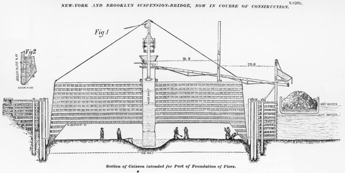

Architectural Innovation
The Brooklyn Bridge, completed in 1883, stands as a marvel of 19th-century engineering. It was the world's first steel-wire suspension bridge and showcased groundbreaking architectural and engineering innovations. The bridge's design, featuring Gothic arches and symmetrical cable arrays, has influenced bridge design globally, marking a pivotal point in architectural history.